Why El Taco?
El Taco plays a large role in the community as a small business and was even chosen by Door Dash to educate and train other minority-run businesses. While their great food has rewarded them with return customers and great reviews online, their website does not reflect all that El Taco offers. For my user interface design class, we were tasked with redesigning an existing website. I chose El Taco because of its great business presence in the community, while it’s current website was visually lacking.
Original Website
El Taco’s existing site consisted of immensely empty space and haphazardly placed content. This site does not represent El Taco’s story and well-deserved reputation for delicious food.
Homepage
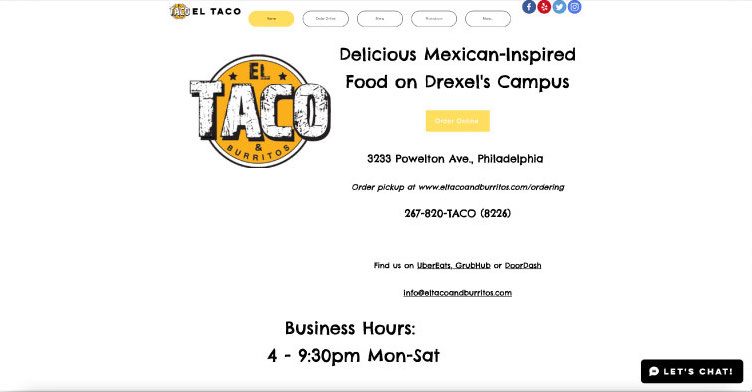Menu

Promotions
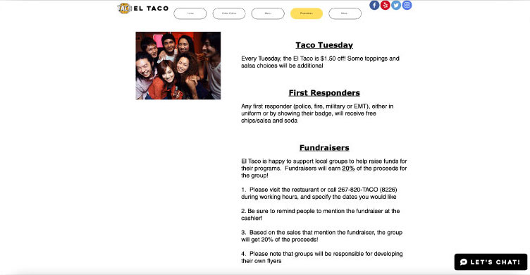Contact

Where does it need to improve?
Consistency
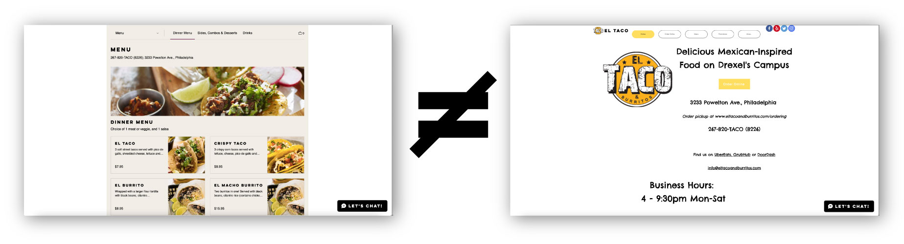The original El Taco website lacked consistency, as most pages didn’t have the same vital information available in a consistent manner. Without internal consistency in design or content availability, users may be faced with an increased cognitive load. This can lead to frustration and users leaving the site, thus losing potential customers.
For example, the menu page displays a much different color scheme, different typography, and layout compared to the homepage.
Information Architecture
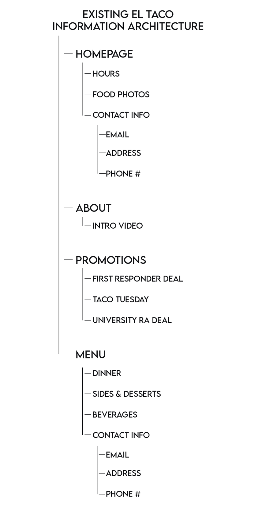While the site's information architecture is not lacking as much as its visual design and interface, it could use some improvements, such as a unifying header and footer with consistent contact information.
Visual Hierarchy
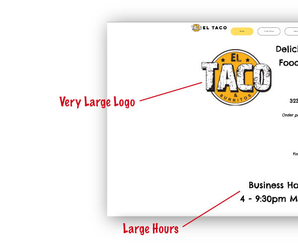 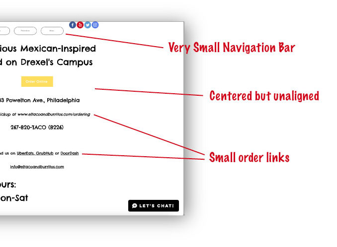Most pages, especially the homepage lack clear visual hierarchy. The user may not know where to look first as there is a strange mashup of font sizes and text color. A more organized and structured approach will give the site much more appeal
White Space
The homepage seems to drown in whitespace. Finding the balance between content and air to breathe around it is vital to users feeling confident and comfortable with El Taco and their business as a whole.
Users and Feedback
User Testing
To understand how to improve the site, I looked through the perspective of the target audience, Philadelphia college students. Since Drexel University students lived in dorms and off campus housing located in close proximity to the restaurant's location, I decided to prioritize that population.
Heuristic Analysis
Desktop
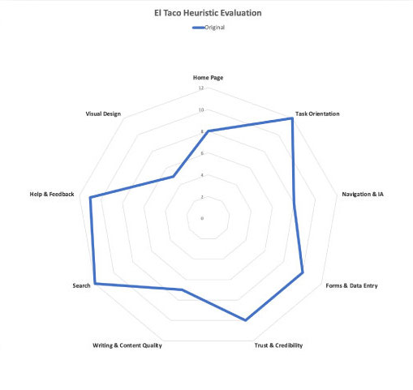Tablet

Mobile
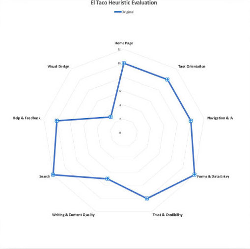By instructing users to navigate through the site and asking them questions regarding their opinions on the site's quality. Some of the topics like "search" don't apply to this specific site. This heuristic analysis showed the strengths and weaknesses of the original El Taco's desktop, mobile, and tablet sites. Across all platforms, it is clear that the site lacks attractive and cohesive visual design, accessible and logical navigation, and content quality.
User Quotes
Some users found the lack of consistency frustrating, while one user pointed out,
I find their website hard to use and I wish some information, like phone number, was available on all pages
Among many users, the lacking visual design unappealing,
The site looks empty and and needs an update… it should be more relatable to college students
Those who have been to the physical restaurant can attest to the fun atmosphere that the space has to offer,
If their site matched their physical restaurant and their great tacos, then they’d get much more business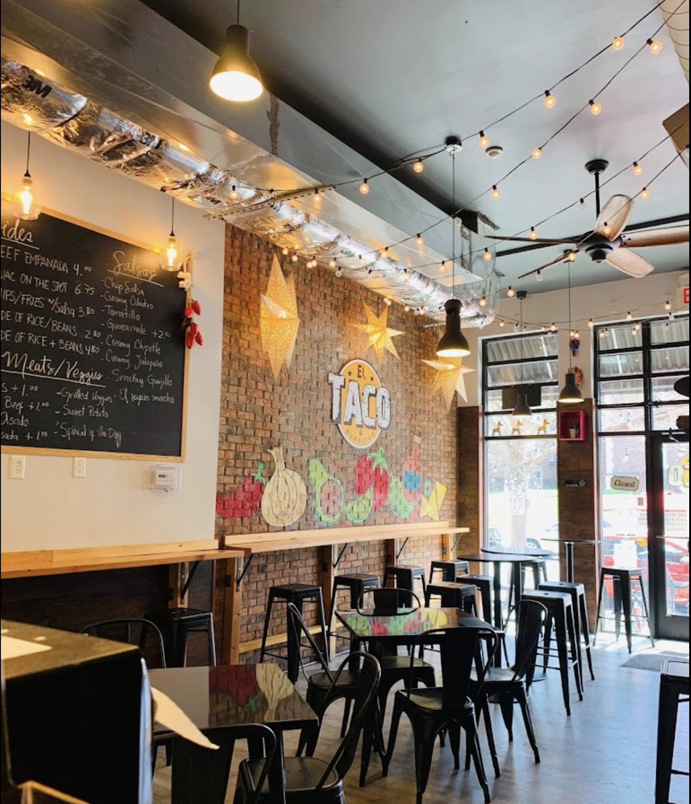
Goals
From examining the card sort and observing users interact with El Taco’s existing site, I came to the conclusion of the research phase. The result is the redesign goals outlined below.
Update Graphic and Colors
Very subtle color scheme with a pale strong, pale yellow that makes text hard to read and doesn’t match logo. By utilizing a new color palettes, this website could turn its most apparent weakness into its largest strength.
Incorporate Consistent Footer
Lacking footer with simple copyright information and nothing else. This footer could be used to add consistency to every page with relevant information.
Accessible & Efficient Navigation
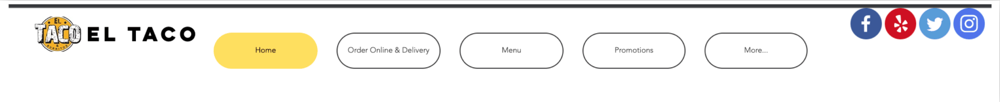The current navigation menu is hard to use, see, and can be replaced with a more efficient menu bar.
Redesign
Initial Color Palettes
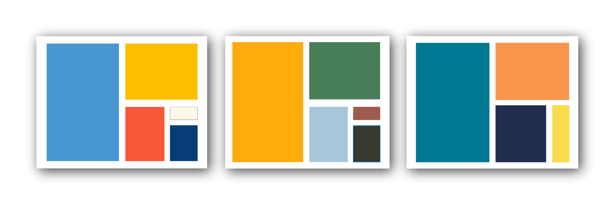A primary focus on yellows and reds to incite hunger and a secondary focus on blues and teals to represent El Taco’s owner’s Guatemalan origins (similar blues to the Guatemala flag)
Final Color Scheme

A warm yellow and dark navy (Primary)
Middle green, yellow, orange, red, and teal (Secondary)
Beige, off white, darker navy, and cream (Tertiary)
Initial Wireframe Sketches
Homepage

About Page
Contact Page
While the final product was very different from the sketches, these preliminary explorations supported the final iterations.
Final Design - Desktop
Homepage
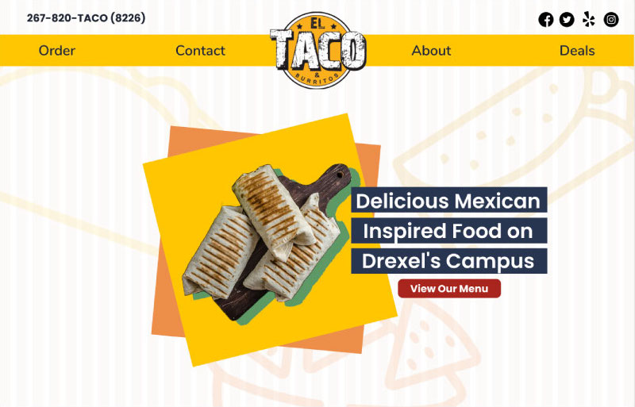Menu
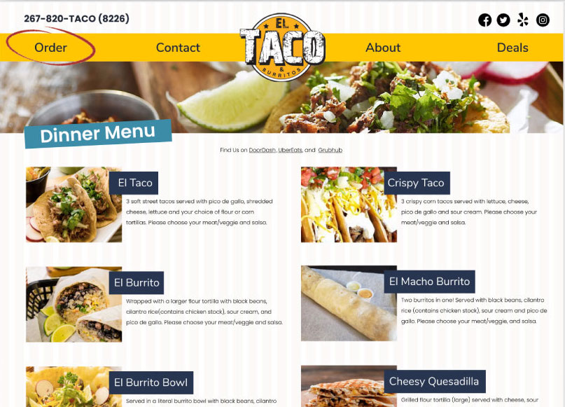Contact
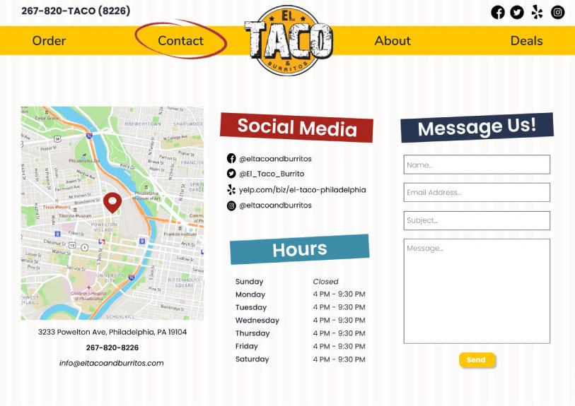Promos
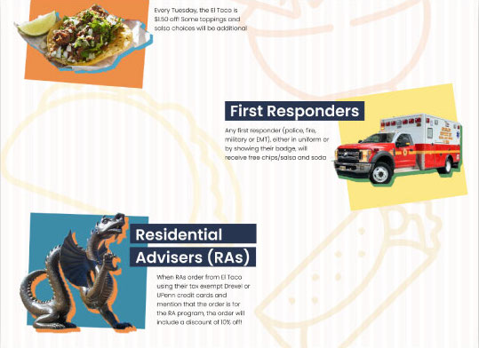Final Design - Tablet
Homepage
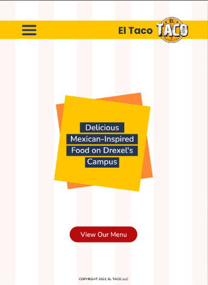Menu
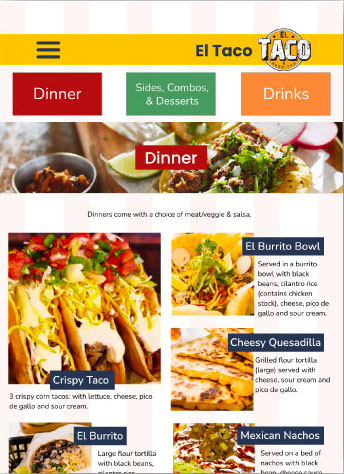Contact
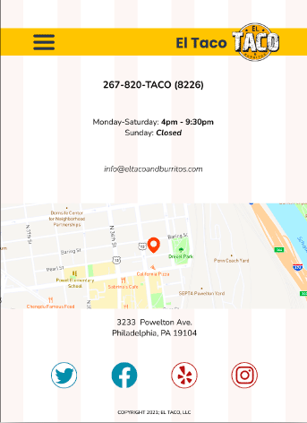Promos